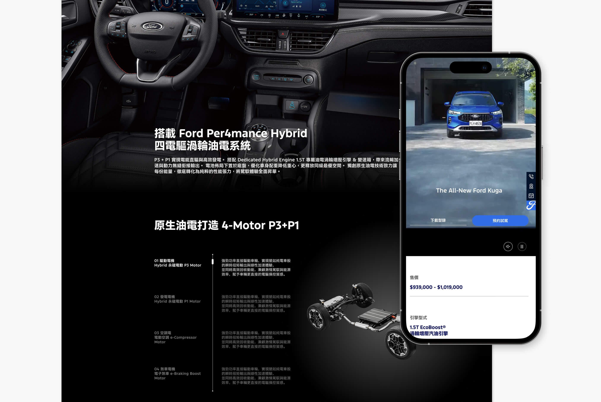
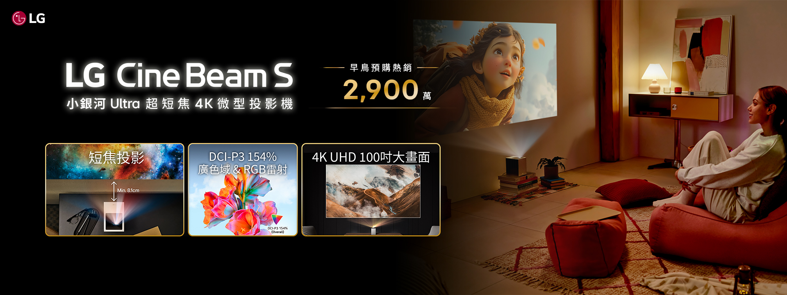

Yuru,
曾參與公共服務平台、企業內部系統與大型品牌專案的 UI/UX 設計師，具 B2B／B2C 經驗。擅長在多角色與高限制情境下釐清需求與流程，將複雜問題轉化為可落地的操作體驗，提升系統可用性與一致性。曾參與交通接送與預約平台、司機端系統、 Ford 官網及LG、Kiehl’s 專案，累積跨情境設計經驗。
✦ 在商業目標與使用者之間找到共識。
✦ 讓資料有脈絡，讓決策更精準。
✦ 讓流程更順，讓決策更有依據。
Ford 官網 模組化 UI 系統建構
UI Design
成果：
建立一致的模組化 UI 框架、提升頁面結構清晰度、為後續車款頁面延伸提供標準化設計基礎。
➤ 獲得 VML ONE
Web3 身份防護系統
NFT 混合驗證 UX 研究
成果與影響：
混合驗證較單一驗證更具採用意願、登入後即呈現優惠與身份摘要、金錢型回饋顯著高於其他獎勵形式。
數據驅動產品決策工作坊｜設計與帶領
— 跨職能遊戲化決策模擬系統設計與驗證
成果：大部分參與者具備極高推薦意願，八成表示渴望參加後續進階工作坊。
 LG 家電產品整合行銷視覺與創意專案
LG 家電產品整合行銷視覺與創意專案

策略：
在短片裡把理性規格轉成感受價值。在集資平台裡呈現價值主張清晰度、產品可信度與情境想像力建立。